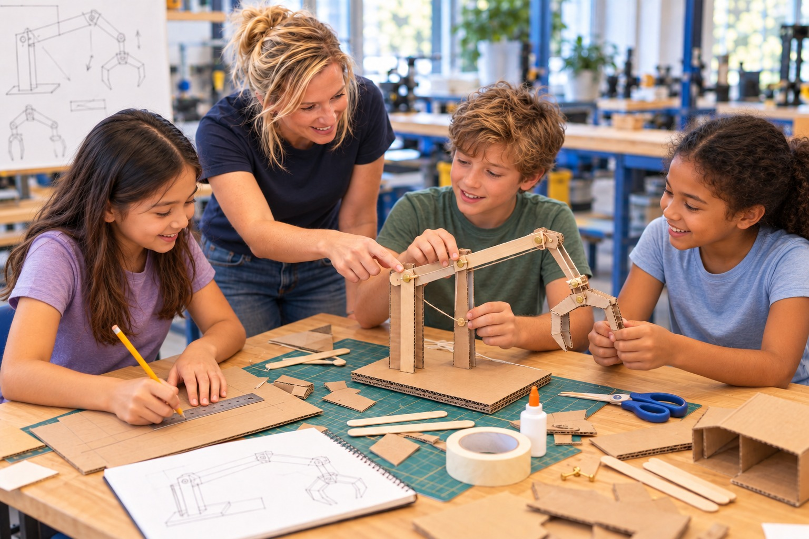

Beispielprojekt
Ein Greifarm aus Pappe
Die Idee: Wie kann ein Greifer Dinge bewegen, ohne dass wir sie direkt anfassen?
Die Umsetzung: Aus Pappe, Stäbchen und Schnüren entsteht ein bewegliches Modell. Die Kinder skizzieren Bauteile, setzen sie zusammen und probieren aus, wie sich Bewegungen übertragen lassen.
Das Ergebnis: Ein selbst gebauter Greifarm und ein erster Zugang zu Hebeln, Gelenken und Mechanik.